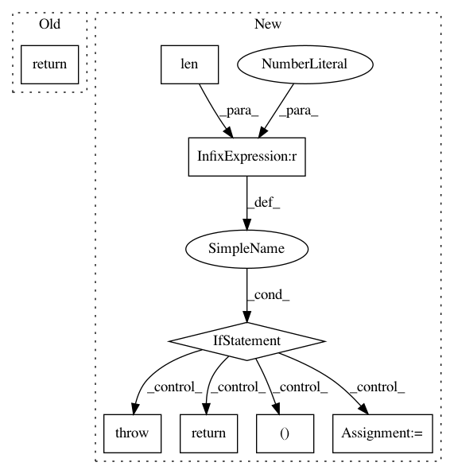

75231a39c212fc8066f99633698b7e59b2ce4efb,onnx_chainer/onnx_helper.py,,is_support_non_standard_domain,#,134
Before Change
def is_support_non_standard_domain():
// from ONNX 1.5, skip schema check on ops in non-standard domain
// see: https://github.com/onnx/onnx/pull/1876
return version.parse(onnx.__version__) >= version.parse("1.5")
After Change
// see: https://github.com/onnx/onnx/pull/1876
// this checker expects onnx adapts semantic versioning
versions = onnx.__version__.split(".")
if len(versions) < 2 or (not versions[1].isdecimal()):
raise RuntimeError(
"ONNX-Chainer cannot get major and minor version ONNX module: "
"{}".format(onnx.__version__))
major, minor = versions[0], versions[1]
return major == "1" and int(minor) >= 5
In pattern: SUPERPATTERN
Frequency: 3
Non-data size: 8
Instances
Project Name: chainer/chainer
Commit Name: 75231a39c212fc8066f99633698b7e59b2ce4efb
Time: 2019-10-13
Author: duaipp@gmail.com
File Name: onnx_chainer/onnx_helper.py
Class Name:
Method Name: is_support_non_standard_domain
Project Name: arraiy/torchgeometry
Commit Name: 6a4fa82792bddc6126eaf944956f49f0a0cb7ca7
Time: 2020-12-22
Author: edgar.riba@gmail.com
File Name: kornia/filters/sobel.py
Class Name:
Method Name: sobel
Project Name: kwgoodman/numerox
Commit Name: 7cb19d316a24705ad57bb1169396449d7aa62636
Time: 2018-10-12
Author: kwgoodman@gmail.com
File Name: numerox/leaderboard.py
Class Name: Leaderboard
Method Name: __contains__